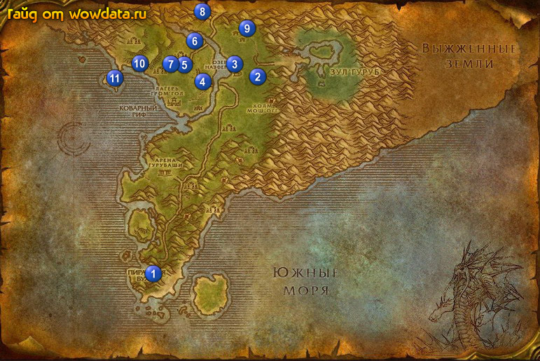

1) Закончите <Гоблинская поддержка> сразу как сойдете с корабля и начните <Гоблинская поддержка>.
2) Идите в гостиницу и сделайте Пиратская бухта вашим домом, начните <Осколки Поющих кристаллов>.
3) Начните <Недружественное поглощение> и <Уши троллей Кровавого Скальпа> на последнем этаже гостиницы.
4) Начните <Остров духов> и закончите его на балконе, начните <Камень приливов>. Затем закончите тут <Гоблинская поддержка> и начните <Гоблинская поддержка>.
5) Идите в магазин 1 (28, 77) и начните <Спрос и предложение> (1 спуск от здания с пункт полета).
6) Идите бейте Тенебрюхая пантера 2 (48, 21) для <Схватка с пантерой>.
7) Пройдите на запад в Опорный лагерь Торговой компании 3 (43, 18) и бейте гоблинов тут для <Недружественное поглощение>, затем заберитесь на большую башню стоящую в озере 3 (43, 18) убейте наверху Штейгер Коззл ради его ключа. Ключом откройте сундук в маленьком доме рядом с башней 3 (43, 20) для <Гоблинская поддержка>.
8) Идите бить Ящер-кнутохвост 4 (37, 22) для <Схватка с ящером>.
9) Бейте Старый тигр Тернистой долины 5 (33, 18) для <Схватка с тигром>.
10) Бегите по берегу к 6 и бейте крокодилов в реке для <Спрос и предложение>.
11) В лагере 6 закончите <Схватка с тигром>, <Схватка с пантерой>, <Схватка с ящером> и <Хеминг Эрнестуэй младший>.
12) Начните <Схватка с тигром>, <Схватка с пантерой> и <Схватка с ящером>.
13) Бегите на юг и убейте Син'Далл 7 (32, 17) на верхушке холма для <Схватка с тигром>, затем закончите этот квест в 6 .
14) Идите наверх в 8 (37, 3) и закончите <Припасы для рядового Торсена>, если вы не сможете найти нужного нпс в лагере, значит он южнее лагеря.
15) Закончите <Возвращение к капралу Калебу.> и получите ваш шлем.
16) Начните <Особые войска>.
17) Идите бейте мобов для <Особые войска> 9 (45, 7), затем вернитесь в 8 (37, 3) и закончите квест, игнорируйте следующую часть.
18) Вы должны стать 36 лвл сейчас, или быть очень близко к нему.
19) Идите на юг до кладбища, затем на запад вдоль реки, бейте василисков для <Осколки Поющих кристаллов>, если тут вам их не хватит, не беспокойтесь – их много на юге 10 (26, 18).
20) Бейте мобов из племени кровавого скальпа (29, 19) для <Уши троллей Кровавого Скальпа>.
21) Бегите на юго-запад к острову 11 (21, 22) пока не увидите надпись что завершен квест <Камень приливов>.
22) По руне вернитесь в Пиратская бухта.
23) Тут же закончите <Осколки Поющих кристаллов> и игнорируйте следующую часть.
24) Поднимитесь наверх, закончите <Поиск лагеря>, <Уши троллей Кровавого Скальпа> и <Недружественное поглощение>.
25) На балконе закончите <Камень приливов> и <Гоблинская поддержка>, начните <Элементали воды> и <Гоблинская поддержка>.
26) Идите в магазин 1 (28, 77) и закончите <Спрос и предложение>, начните <Добыча шкур>.
27) Летите в Стальгорн, выучите новые скилы и летите в Гавань Менетил, сделайте его своим домом и сядьте на корабль в .
28) Если навык первой помощи у вас 225, то сделайте квест на повышение профессии <Очередность перевязки> в замке на 1 этаже. Затем летите в Прибамбасск.
29) Бегите в Мерцающая равнина, там закончите <Детали для Крейвела> и начните <Заказ гномов>. Затем закончите его.
30) Пройдите немного на восток и закончите <Гоблинская поддержка>, начните <Восемнадцатый пилот>, закончите его у Раззерик и начните <Настройки Раззерика>.
31) Начните <Сплетник> у дварфа и вернитесь по руне в Гавань Менетил, затем летите в Штормград .